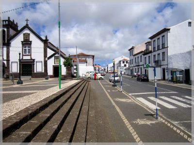

Vila do Porto
Vila do Porto
História
 Vila do Porto é uma freguesia semi-urbana do concelho da Vila do Porto, na ilha de Santa Maria, na Região Autónoma dos Açores. Tem uma superfície total de 26,04 km2 e 3 119 habitantes (Censos 2011), o que corresponde a uma densidade populacional de 119,8 hab./Km2. Possui um aeroporto internacional e porto comercial.
A mais antiga dos Açores, localiza-se na costa Oeste da ilha e tem como limites o oceano Atlântico, a Norte, Oeste e Sul e as freguesias de Almagreira e São Pedro a Este. O seu núcleo histórico apresenta duas zonas distintas: a primeira zona, abaixo da Igreja Matriz, mantém o traçado primitivo das suas ruas de cariz medieval; a segunda zona, a mais recente, acima da Matriz, o casario desenvolve-se ao longo de uma rua comprida e espaçosa. É integrada pelos lugares de Vila, Salvaterra, Valverde, Pedras de São Pedro, Flor da Rosa, Santana, Aeroporto e Anjos.
Frei Gonçalo Velho Cabral, fidalgo da Casa do Infante D. Henrique e Comendador da Ordem de Cristo, chegou à Ilha de Santa Maria em 1432. Na cartografia do século XIV, é chamada de "Ilha dos Lobos". Foi sede da primeira Capitania das ilhas dos Açores, inicialmente abrangendo as ilhas de Santa Maria e de São Miguel. O seu povoamento iniciou-se em 1439, após o desembarque na Praia dos Lobos.
O povoado do Porto terá sido fundado em 1450, por Fernão de Quental, numa lomba soalheira da costa Sul frente a ampla enseada. A Vila do Porto nasceu com o primeiro foral dos Açores cerca de 1470.
Apesar de não ter conhecido atividade sísmica desde o povoamento, foi sempre marcada pelo isolamento, inacessibilidade e fraco poder defensivo. Acredita-se que o desaparecimento dos documentos relativos à sua fundação tenha ocorrido na sequência dos incêndios causados por um ataque de corsários em 1616.
Sobre a sua população, Gaspar Frutuoso, nas Saudades da Terra, refere:
"É povoada esta Vila e toda a ilha de gente muito honrada, e muitos tem fidalguia por suas progénies, e outros por [a]lianças de casamentos com os Capitães e seus filhos, de que nasceram fidalgos. Todos os homens honrados, naturais da terra, quase geralmente são altos de corpo, bem dispostos e bem proporcionados, de bons e graves rostos e boas fisionomias, presumptuosos [sic] e amigos de honra, como o deve ser qualquer homem honrado."
Já no séc. XX, no ano de 1901, Vila do Porto recebeu a visita régia de D. Carlos I de Portugal e de Dona Amélia. No ano de 1908, quando ainda vigorava o regime monárquico em Portugal, o partido Republicano elegeu em Vila do Porto a sua primeira Câmara Municipal
Com a construção do seu Aeroporto internacional em 1944, primeiramente servindo a Base Aérea dos Estados Unidos e em 1946 aberto ao tráfego aéreo civil, a freguesia de Vila do Porto adquiriu nova dinâmica, urbana, económica e cultural. De passado predominantemente agrícola, atualmente a sua economia baseia-se nos setores secundário e terciário sendo sede do importante Centro Oceânico de Controlo Aéreo.